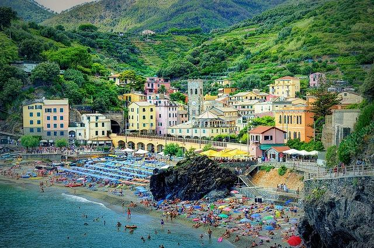

| Come gran parte delle coste italiane Monterosso fu esposto alle razzie dei corsari barbareschi che riuscirono ad occuparlo nel 1545 con dieci vascelli al comando dell'ammiraglio e corsaro ottomano Dragut.
Il borgo riportò gravissimi danni e in quell’occasione furono rapite donne e bambini, da cui pretendere un riscatto o da vendere come schiavi. Come tutta la Liguria, Monterosso nel 1815 entrò a far parte del Regno di Sardegna, secondo le decisioni del Congresso di Vienna del 1814, e successivamente del Regno d'Italia dal 1861.
Dal 1859 al 1927 il territorio fu compreso nel VI mandamento di Levanto del circondario di Levante della provincia di Genova prima e, con la sua istituzione nel 1923, della provincia della Spezia poi. Nel 1863 assunse l'odierna denominazione di "Monterosso al Mare" . |
 |